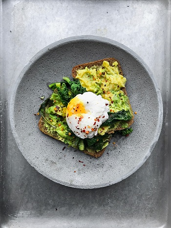
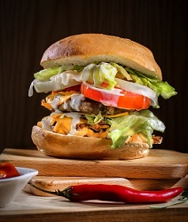
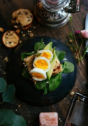

.jpg)
Dear Valued Customer,
Welcome to Online food ordering is the process of ordering food through the restaurant's own website or mobile app, or through a multi-restaurant's website or app. A customer can choose to have the food delivered or for pick-up. The process consists of a customer choosing the restaurant of their choice, scanning the menu items, choosing an item, and finally choosing for pick-up or delivery. Payment is then administered by paying with a credit card or debit card through the app or website or in cash at the restaurant when going to pickup. The website and app inform the customer of the food quality, duration of food preparation, and when the food is ready for pick-up or the amount of time it will take for delivery. The online food ordering market includes foods prepared by restaurants, prepared by independent people, and groceries being ordered online and then picked up or delivered.
Hotline Number:
667-6325
Email: OfficialFoodOnline@yahoo.com
Contact Number:
09818951248 / 09175017402